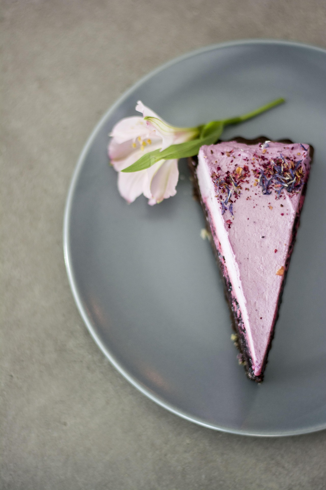
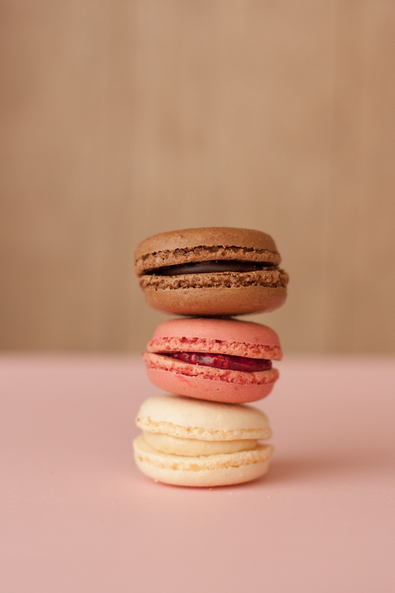

¡El sabor a toda hora!
-Panadería y repostería-
¡Bienvenido!
Ofrecemos panes artesanales hechos con mucho amor, cada uno de ellos con ingredientes frescos y seleccionados de la mejor manera para ofrecer la más alta calidad, entre los productos que puedes encontrar destacan los bocadillos, queques y panes.
El pan es la más importante de todas las invenciones sociales, anterior a la agricultura misma.
-Guy de Maupassant-
Nuestros Productos
- Panes salados
- Su olor característico, su textura crujiente y su sabor inconfundible son características propias de nuestro pancito salado. Nuestra variedad de panes salados va desde el famoso y legendario bollito español hasta las bollas aliñadas que se pueden llevar directamente a la mesa sin acompañamiento. Nuestra receta perfeccionada con el tiempo hace que nuestro pan baguette se conserve fresco y agradable por mucho más tiempo. El tamaño y forma de nuestras bollitas son ideales para prepararse un delicioso emparedado. Las puede encontarr aliñadas con queso o natilla.
- Panes dulces
- El pan dulce de la panadería casera tiene sabor casero del pan de nuestras abuelas. Fermentado cálidamente, hace qeu su miga quede esponjosa y mantenga el sabor de cada uno de los ingredientes
- Panes integrales
- ¡Por qué comer saludable también es rico!
Nuestros panes integrales son altos en fibra, elaborados con harina integral de la más alta calidad e ingredientes que aportan a la salud.

